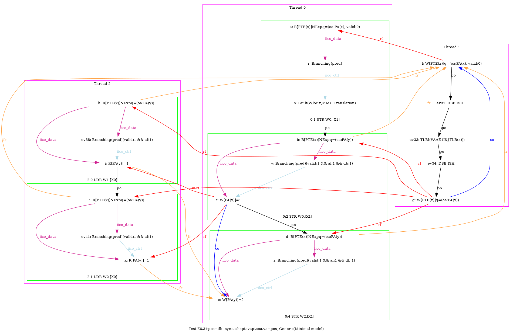
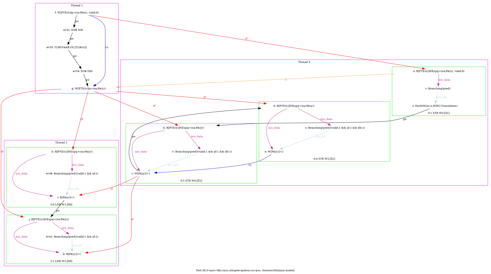
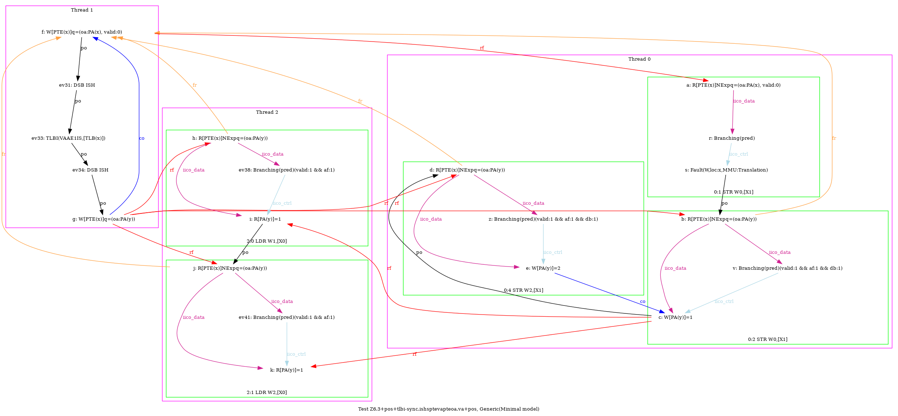
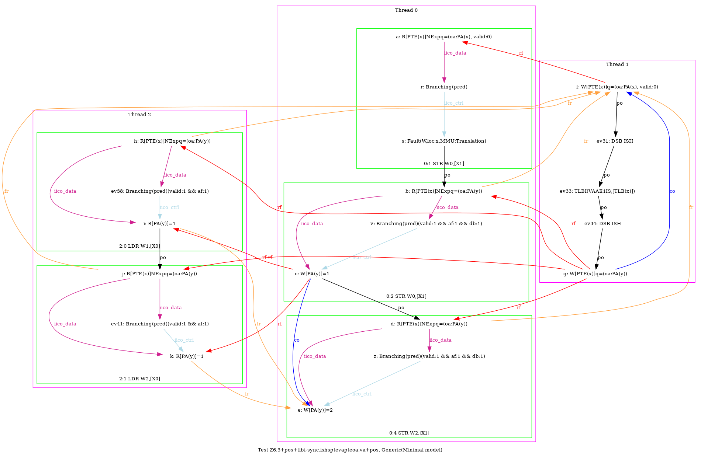
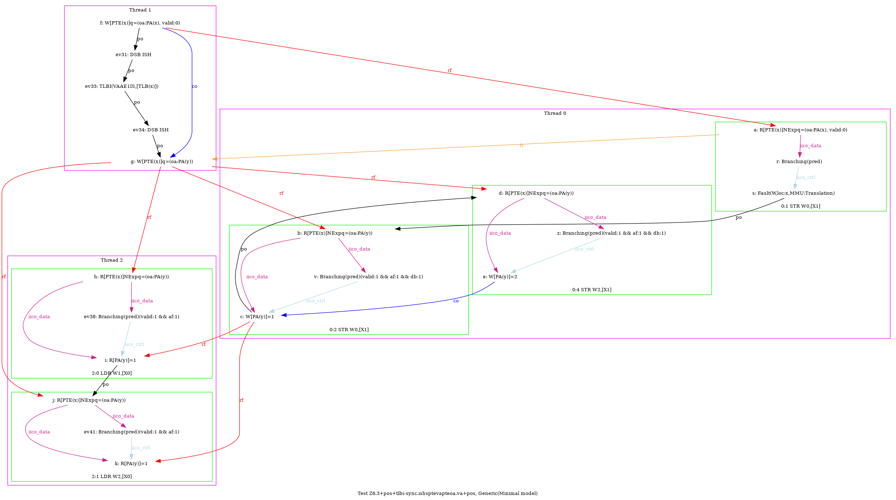
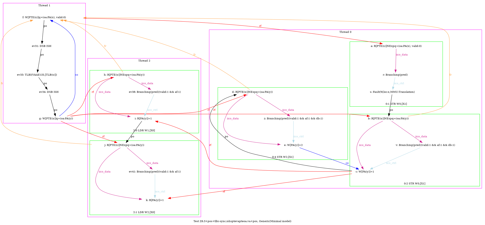

  …
  …
AArch64 Z6.3+pos+tlbi-sync.ishsptevapteoa.va+pos
"PosWW CoePPteVA TLBI-sync.ISHsWWPteVAPteOA.VA RfePteOA.VAP PosRR Fre"
Variant=imprecise
Cycle=Fre PosWW CoePPteVA TLBI-sync.ISHsWWPteVAPteOA.VA RfePteOA.VAP PosRR
Relax=[PteVA,TLBI-sync.ISHsWW,PteOA,PteVA]
Safe=Rfe Fre Coe PosWW PosRR
Generator=diy7 (version 7.56+02~dev)
Com=Co Rf Fr
Orig=PosWW CoePPteVA TLBI-sync.ISHsWWPteVAPteOA.VA RfePteOA.VAP PosRR Fre
{ int x=0; int y=4;
0:X1=x;
1:X0=PTE(x); 1:X1=(oa:PA(x), valid:0); 1:X2=(oa:PA(y)); 1:X3=x;
2:X0=x;
}
P0 | P1 | P2 ;
MOV W0,#1 | STR X1,[X0] | LDR W1,[X0] ;
STR W0,[X1] | LSR X4,X3,#12 | LDR W2,[X0] ;
MOV W2,#2 | DSB ISH | ;
STR W2,[X1] | TLBI VAAE1IS,X4 | ;
| DSB ISH | ;
| STR X2,[X0] | ;
exists (2:X1=1 /\ 2:X2=1 /\ [x]=0 /\ fault(P0,x,MMU:Translation) /\ ~fault(P2,x))